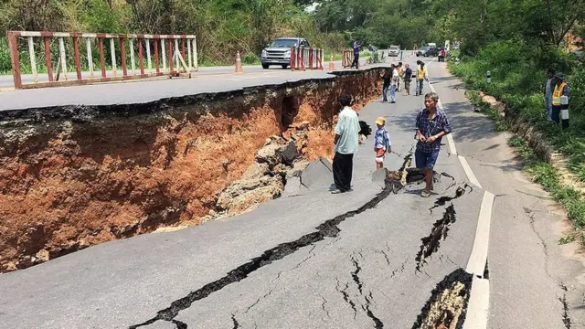
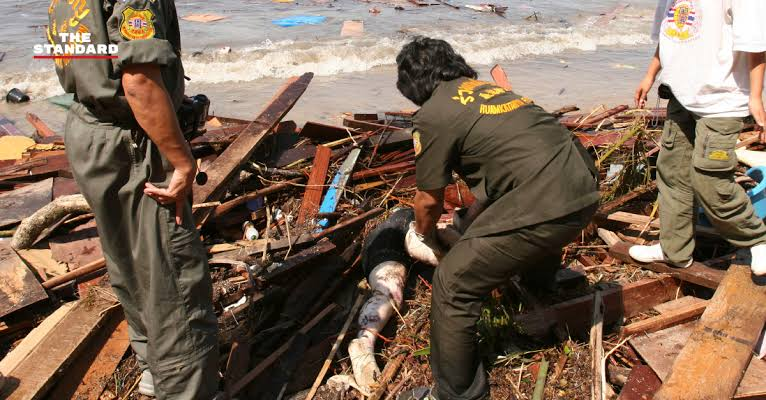
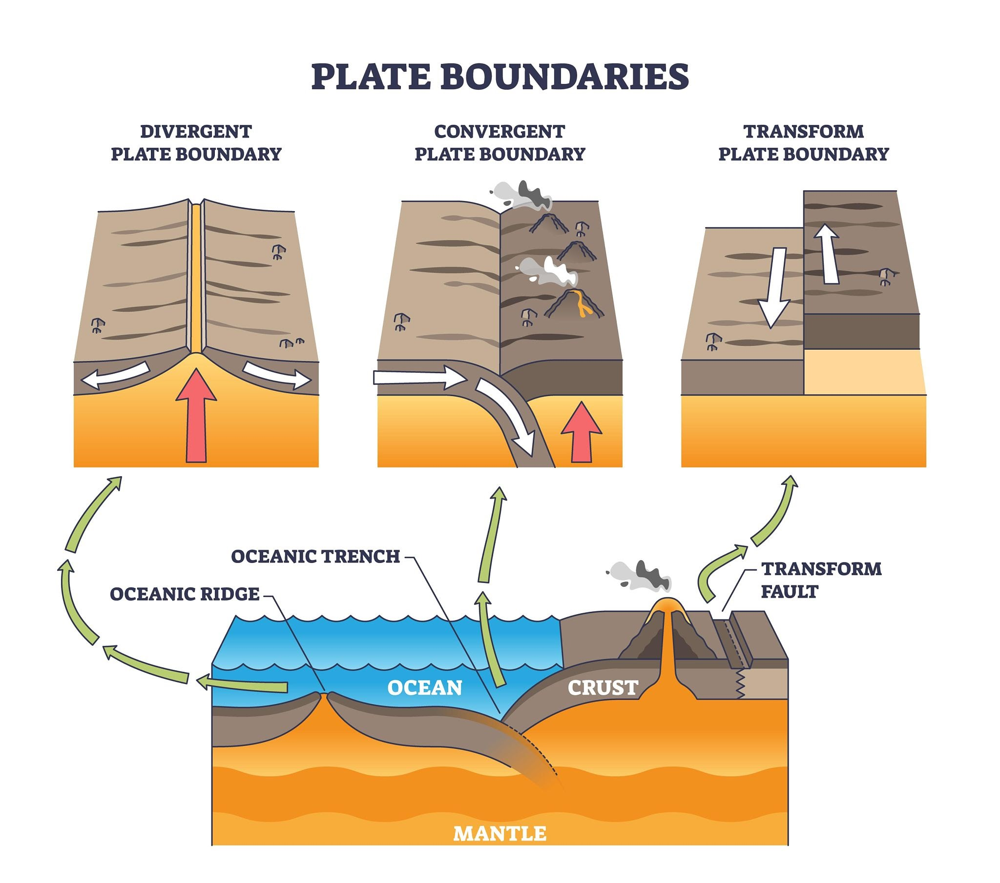

⚠️ รายงานแผ่นดินไหวล่าสุด (Real-time Seismic Report)
ประมวลผลอัตโนมัติจากเครือข่ายสถานีตรวจวัดแผ่นดินไหวทั่วประเทศ
| 🕒 วัน-เวลา (เวลาไทย) | 📉 ขนาด (Richter) | 📍 พิกัด (Lat / Long) | 📏 ความลึก | 🗺️ สถานที่เกิดเหตุ | 💬 แรงสั่นสะเทือน |
|---|---|---|---|---|---|
| 06 มิ.ย. 2026 - 21:20:10 | 4.8 | 21.25°N, 99.85°E | 10 กม. | ประเทศเมียนมา (พรมแดนไทย) | รู้สึกได้ที่เชียงใหม่/เชียงราย |
| 06 มิ.ย. 2026 - 17:05:00 | 3.2 | 19.05°N, 98.95°E | 5 กม. | อำเภอแม่ริม จังหวัดเชียงใหม่ | เบามาก (ไม่เสียหาย) |
📚 คลังประวัติและสถิติเหตุการณ์แผ่นดินไหวครั้งสำคัญ
บันทึกเหตุการณ์ภัยพิบัติทางธรณีวิทยาที่สำคัญ ทั้งในประเทศไทยและระดับโลก
แผ่นดินไหวขนาด 6.3 สร้างความเสียหายหนักในภาคเหนือ
เกิดความเสียหายต่อบ้านเรือน โรงเรียน และโบราณสถานหลายแห่ง แรงสั่นสะเทือนรับรู้ได้ถึงกรุงเทพมหานคร

แผ่นดินไหวรุนแรง 9.1-9.3 และคลื่นสึนามิ
ส่งผลกระทบต่อ 6 จังหวัดชายฝั่งทะเลอันดามัน นำมาสู่การจัดตั้งระบบเตือนภัยสึนามิแห่งชาติ

🌐 องค์ความรู้: รอยเลื่อนมีพลัง (Active Faults) และกลไกการเกิด
ความรู้พื้นฐานทางธรณีวิทยาเกี่ยวกับรอยเลื่อนที่มีโอกาสขยับตัวและปลดปล่อยพลังงาน
📌 รอยเลื่อนแม่จัน (จ.เชียงราย - เชียงใหม่)
เป็นหนึ่งในรอยเลื่อนมีพลังสำคัญทางภาคเหนือ พาดผ่านอำเภอฝาง แม่จัน และเชียงแสน มีอัตราการเคลื่อนตัวที่ต้องเฝ้าระวังพิเศษ
📌 รอยเลื่อนศรีสวัสดิ์และเจดีย์สามองค์ (จ.กาญจนบุรี)
พาดผ่านบริเวณตะวันตกของประเทศ ใกล้กับอ่างเก็บน้ำขนาดใหญ่ มีการติดตั้งสถานีตรวจวัดแรงสั่นสะเทือนแบบเรียลไทม์

🚨 คู่มือความปลอดภัย: วิธีปฏิบัติตนเมื่อเกิดแผ่นดินไหว
ความรู้ที่ช่วยชีวิต: ปฏิบัติตามหลักการสากล "หมอบ ป้องกัน และยึดเกาะ"
- • หมอบลง (Drop): ลงใต้โต๊ะหรือเฟอร์นิเจอร์ที่แข็งแรงทันที
- • ป้องกันศีรษะ (Cover): ใช้มือปกป้องศีรษะและลำคอ
- • ยึดเกาะ (Hold): จับขาโต๊ะให้มั่นคงจนกว่าการสั่นจะสงบ
- • รีบเคลื่อนย้ายไปยังพื้นที่โล่งแจ้งทันที
- • อยู่ให้ห่างจากตึกสูง เสาไฟฟ้า และป้ายโฆษณาขนาดใหญ่
- • หากอยู่ใกล้ชายทะเล ให้รีบอพยพขึ้นที่สูงทันที
- • ตรวจสอบความเสียหายโครงสร้างบ้าน แก๊สรั่ว หรือไฟช็อต
- • ระวังแรงสั่นสะเทือนต่อเนื่อง (Aftershocks)
- • ติดตามข่าวสารจากประกาศทางการของกรมอุตุนิยมวิทยา
🌍 บันทึกประวัติเหตุการณ์แผ่นดินไหวครั้งสำคัญ (รายปี ค.ศ. 2000 - 2026)
รายละเอียดเหตุการณ์แผ่นดินไหวสำคัญครบถ้วนทุกปีตั้งแต่ปี ค.ศ. 2000 จนถึงปัจจุบัน
| 📅 ปี (C.E.) | 📉 ขนาด | 🗺️ พื้นที่เกิดเหตุ | 📌 รายละเอียดเหตุการณ์สำคัญ |
|---|---|---|---|
| 2026 | 7.5 | คาบสมุทรโนโตะ ประเทศญี่ปุ่น | เกิดแผ่นดินไหวรุนแรงช่วงต้นปี อาคารบ้านเรือนพังเสียหาย และประกาศเตือนภัยสึนามิชายฝั่งทะเลญี่ปุ่น |
| 2025 | 7.0 | นอกชายฝั่งรัฐแคลิฟอร์เนีย สหรัฐอเมริกา | เกิดแผ่นดินไหวใต้ทะเลลึก มีการประกาศเตือนภัยสึนามิระยะสั้นและเฝ้าระวังอาฟเตอร์ช็อก |
| 2024 | 7.4 | เมืองฮวาเหลียน ประเทศไต้หวัน | แผ่นดินไหวครั้งใหญ่สุดในรอบ 25 ปีของไต้หวัน ส่งผลให้อาคารเอียงทรุดและหินถล่มตามแนวภูเขา |
| 2023 | 7.8 | ประเทศตุรกีและซีเรีย | แผ่นดินไหวครั้งใหญ่ที่สุดครั้งหนึ่งในรอบทศวรรษ สร้างความเสียหายรุนแรงเป็นวงกว้างและมีผู้เสียชีวิตจำนวนมาก |
| 2022 | 5.6 | จังหวัดชวาตะวันตก ประเทศอินโดนีเซีย | แผ่นดินไหวระดับตื้น ส่งผลให้บ้านเรือนพังเสียหายหนักและมีดินถล่มทับพื้นที่ชุมชนใกล้เมืองจันเจียร์ |
| 2021 | 7.2 | ประเทศเฮติ | แผ่นดินไหวรุนแรงซ้ำเติมพื้นที่ทางตอนใต้ของประเทศ สร้างความเสียหายต่อที่อยู่อาศัยและโรงพยาบาล |
| 2020 | 7.0 | ทะเลอีเจียน (ตุรกีและกรีซ) | ส่งผลให้อาคารหลายหลังในเมืองอิซเมิร์ตพังถล่ม และเกิดคลื่นสึนามิขนาดเล็กซัดเข้าชายฝั่ง |
| 2019 | 6.4 | เกาะมินดาเนา ประเทศฟิลิปปินส์ | เกิดแผ่นดินไหวต่อเนื่องหลายระลอก สร้างความเสียหายต่อโครงสร้างพื้นฐานและที่พักอาศัย |
| 2018 | 7.5 | เกาะสุลาเวสี ประเทศอินโดนีเซีย | แผ่นดินไหวตื้นตามด้วยสึนามิและปรากฏการณ์ดินเหลว (Liquefaction) กลืนกินชุมชนทั้งแถบ |
| 2017 | 7.1 | ตอนกลางของประเทศเม็กซิโก | เกิดตรงกับวันครบรอบแผ่นดินไหวใหญ่ปี 1985 อาคารสูงในเม็กซิโกพังถล่มหลายแห่ง |
| 2016 | 7.0 | จังหวัดคุมาโมโตะ ประเทศญี่ปุ่น | เกิดแรงสั่นสะเทือนต่อเนื่อง (Swarm Earthquakes) สร้างความเสียหายต่อโครงสร้างพื้นฐานและปราสาทคุมาโมโตะ |
| 2015 | 7.8 | ประเทศเนปาล | สร้างความเสียหายหนักต่อโบราณสถาน มรดกโลก และยอดเขาเอเวอเรสต์ (เกิดหิมะถล่ม) |
| 2014 | 6.1 | อำเภอแม่ลาว จังหวัดเชียงราย (ไทย) | แผ่นดินไหวครั้งประวัติศาสตร์ในไทย สร้างความเสียหายหนักแก่บ้านเรือน วัด และโรงเรียนในภาคเหนือ |
| 2013 | 7.1 | เกาะโบโฮล ประเทศฟิลิปปินส์ | ทำลายโบราณสถานเก่าแก่และสร้างความเสียหายต่อโครงสร้างบ้านเรือนประชาชนเป็นวงกว้าง |
| 2012 | 8.6 | นอกชายฝั่งสุมาตรา ประเทศอินโดนีเซีย | แผ่นดินไหวใต้ทะเลขนาดใหญ่แบบ Strike-slip รู้สึกสั่นไหวได้ในหลายจังหวัดภาคใต้ของไทย |
| 2011 | 9.0 - 9.1 | โทโฮคุ ประเทศญี่ปุ่น | แผ่นดินไหวใต้ทะเลนอกชายฝั่ง ส่งผลให้เกิดคลื่นสึนามิสูงและวิกฤตการณ์โรงไฟฟ้าพลังงานนิวเคลียร์ฟุกุชิมะ |
| 2010 | 7.0 | ประเทศเฮติ | จุดศูนย์กลางใกล้เมืองหลวง ปรากฏการณ์ความเสียหายรุนแรงต่อชีวิตและทรัพย์สินของประชาชน |
| 2009 | 7.6 | เมืองปาดัง ประเทศอินโดนีเซีย | สร้างความเสียหายต่ออาคารบ้านเรือน โรงแรม และมีผู้ติดใต้ซากปรักหักพังเป็นจำนวนมาก |
| 2008 | 7.9 | มณฑลเสฉวน ประเทศจีน | แผ่นดินไหวเสฉวน ส่งผลให้อาคารบ้านเรือนและโรงเรียนพังถล่มลงมาเป็นวงกว้าง |
| 2007 | 8.5 | เกาะสุมาตรา ประเทศอินโดนีเซีย | เกิดแผ่นดินไหวรุนแรงใกล้เกาะสุมาตรา มีการประกาศเตือนภัยสึนามิในแถบมหาสมุทรอินเดีย |
| 2006 | 6.3 | เมืองยอกยาการ์ตา ประเทศอินโดนีเซีย | แผ่นดินไหวระดับตื้นสร้างความเสียหายหนักแก่บ้านเรือนและโบราณสถานสำคัญทางประวัติศาสตร์ |
| 2005 | 8.6 | เกาะนีอัส ประเทศอินโดนีเซีย | เหตุการณ์ต่อเนื่องใกล้เคียงกับปี 2004 ส่งผลกระทบต่อเกาะใกล้เคียงและสร้างความตื่นตระหนกในไทย |
| 2004 | 9.1 - 9.3 | เกาะสุมาตรา ประเทศอินโดนีเซีย | มหันตภัยแผ่นดินไหวและสึนามิครั้งประวัติศาสตร์กระทบ 6 จังหวัดภาคใต้ฝั่งอันดามันของไทย |
| 2003 | 6.6 | เมืองบัม ประเทศอิหร่าน | ทำลายเมืองโบราณบัมและป้อมปราการอิฐดินดิบโบราณพังเสียหายเกือบทั้งหมด |
| 2002 | 7.1 | เกาะมินดาเนา ประเทศฟิลิปปินส์ | เกิดแรงสั่นสะเทือนรุนแรง ส่งผลให้โครงสร้างสะพานและอาคารบ้านเรือนได้รับความเสียหาย |
| 2001 | 7.7 | รัฐคุชราต ประเทศอินเดีย | แผ่นดินไหววันชาติอินเดีย สร้างความเสียหายแก่อาคารบ้านเรือนและระบบสาธารณูปโภคเป็นวงกว้าง |
| 2000 | 7.9 | เกาะสุมาตรา ประเทศอินโดนีเซีย | แผ่นดินไหวรุนแรงช่วงต้นทศวรรษ เปิดฉากยุคแห่งความตื่นตัวด้านธรณีพิบัติภัยในภูมิภาคเอเชียตะวันออกเฉียงใต้ |